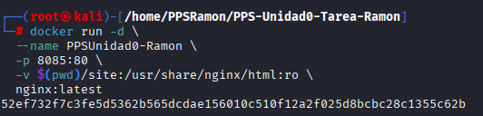
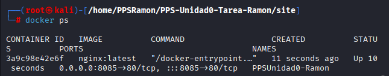

Documentación del proceso con Docker
En este apartado se documenta la creación y puesta en marcha de un contenedor NGINX mediante Docker para mostrar la documentación generada con MkDocs.
1. Preparación del entorno
Antes de comenzar, aseguramos que Docker está instalado y funcionando correctamente:
docker --version
docker ps

En caso de que no esté instalado Docker:
apt update
apt install docker.io -y
2. Preparación
Generar el sitio web estático a partir de la documentación escrita en Markdown y la configuración del proyecto.
mkdocs build


3. Creación del contenedor NGINX
Se ha decidido utilizar un contenedor Docker simple con bind mount para montar la carpeta del repositorio en el contenedor.
Comando utilizado:
docker run -d \
--name PPSUnidad0-Ramon \
-p 8085:80 \
-v $(pwd)/site:/usr/share/nginx/html:ro \
nginx:latest

4. Verificación del contenedor
Comprobamos que el contenedor está en ejecución:
docker ps

Inspeccionamos la configuración del contenedor:
docker inspect PPSUnidad0-Ramon

5. Visualización de la página
Abrimos el navegador y accedemos a:
http://localhost:8085
Se mostrará correctamente la documentación publicada por MkDocs a través del contenedor NGINX.

Conclusión
La práctica con Docker permitió comprobar cómo levantar un contenedor NGINX, configurar puertos y volúmenes, y servir la documentación generada con MkDocs. Aunque el uso de GitHub Pages ya cubre la publicación, este ejercicio fue útil para afianzar conceptos básicos de despliegue y administración de contenedores.